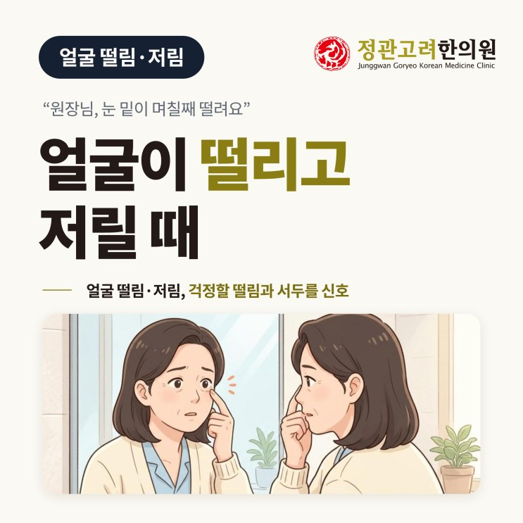
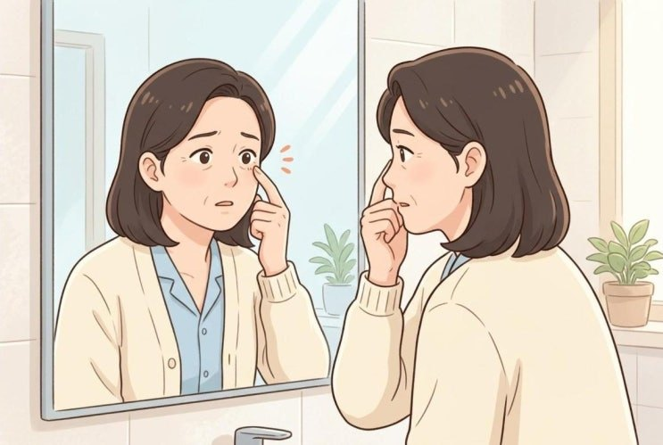
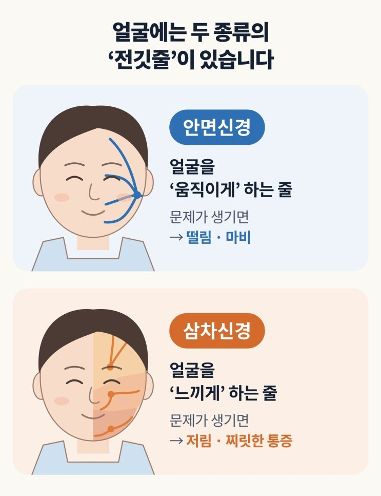
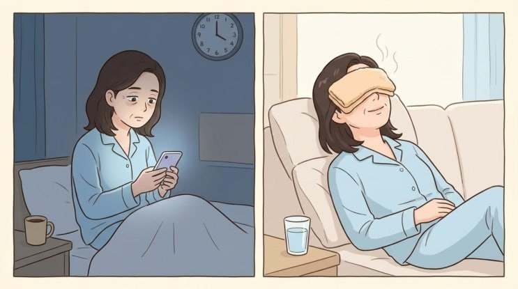
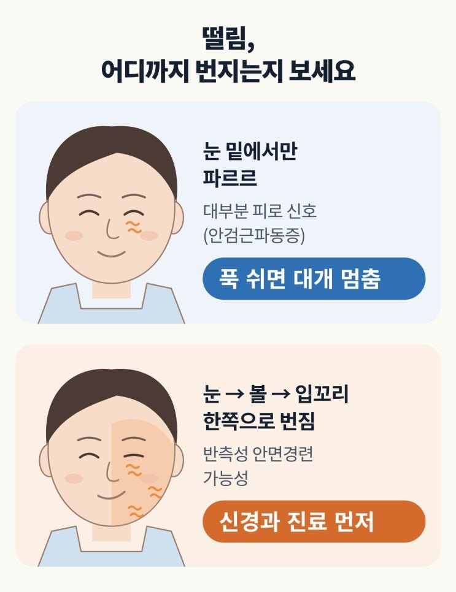
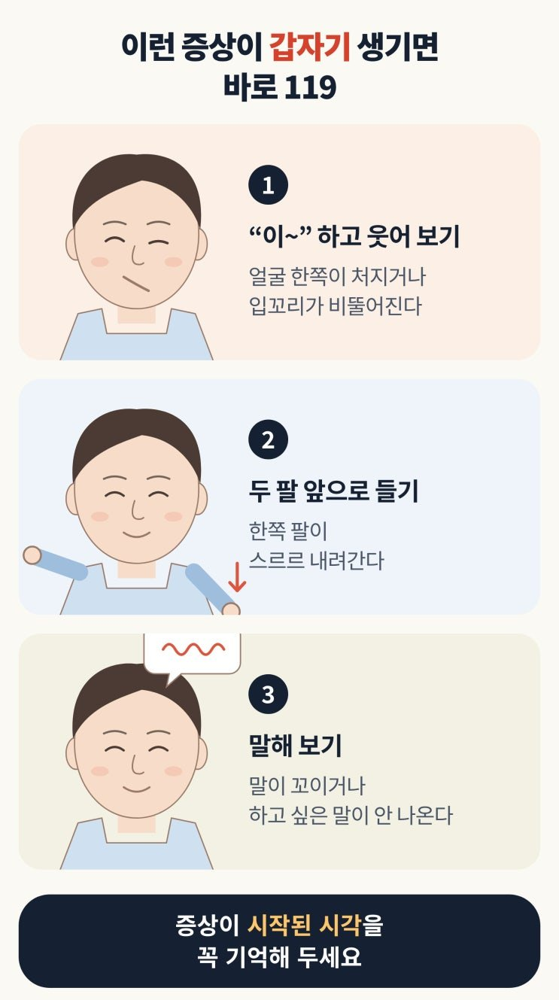
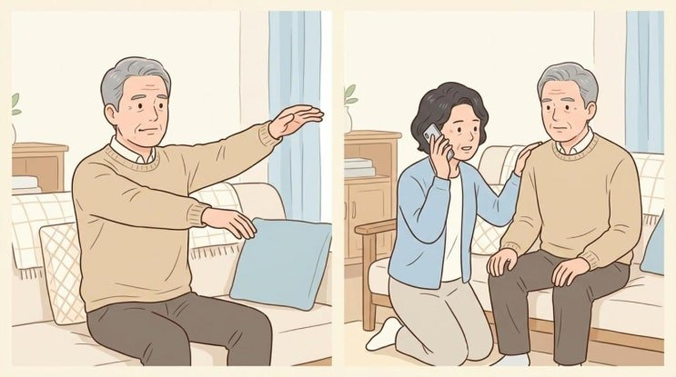
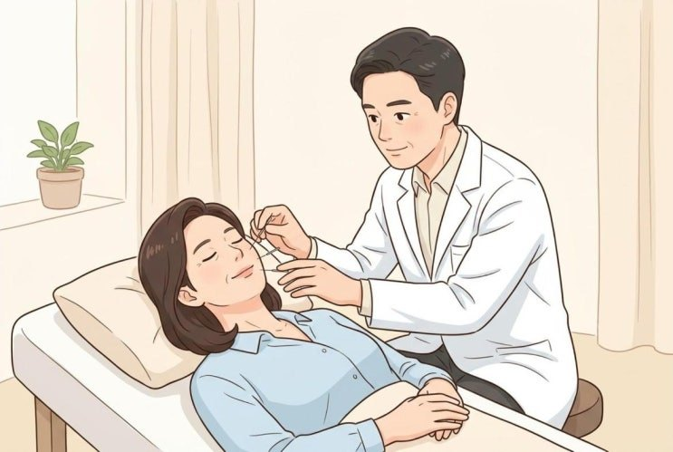

얼굴이 떨리고 저릴 때, 걱정해야 할까요? (눈꺼풀 떨림, 안면경련, 구안와사, 뇌졸중 신호)
이 글에서 알 수 있는 내용
- 걱정하지 않아도 되는 떨림과 진료가 필요한 떨림
- 저리고 아플 때 원인을 알려 주는 단서
- 바로 119를 불러야 하는 뇌졸중 신호

눈 밑이 저 혼자 파르르 떨린 적 있으신가요?
얼굴 한쪽이 내 살 같지 않고 멍한 느낌이 든 적은요?

이런 증상이 생기면 두 가지 마음이 듭니다.
"설마 큰 병인가?" 하는 걱정, 그리고 "피곤해서 그렇겠지" 하는 방심입니다.
진료실에서는 두 경우를 모두 자주 봅니다.
걱정하지 않아도 될 분은 너무 걱정하시고, 서둘러야 할 분은 너무 늦게 오시는 경우가 많습니다.
오늘은 그 둘을 구분하는 법을 쉽게 정리해 드리겠습니다.
먼저 결론부터
얼굴 떨림은 대부분 피곤해서 생깁니다.
푹 자고 쉬면 대개 저절로 좋아지는 경우가 많습니다.
하지만,
얼굴이 갑자기 한쪽으로 처지거나
말이 어눌해지거나
팔다리에 힘이 빠지면
뇌졸중의 신호일 수 있으니 기다리지 마시고 바로 119를 부르시기 바랍니다.
얼굴에는 두 종류의 '전깃줄'이 있습니다
우리 얼굴에는 뇌에서 나온 신경이 전깃줄처럼 퍼져 있습니다.
그 중 중요한 두 신경이 있습니다.

하나는 얼굴을 '움직이게' 하는 줄, 안면신경입니다.
눈을 감고, 웃고, 입을 오므리는 일을 합니다.
이 줄에 전기가 제멋대로 흐르면 얼굴이 떨리고, 전기가 잘 안 흐르면 얼굴이 마비됩니다.
다른 하나는 얼굴을 '느끼게' 하는 줄, 삼차신경입니다.
손이 닿는 느낌, 뜨겁고 차가운 느낌, 아픈 느낌을 뇌로 전해 줍니다.
이 줄에 문제가 생기면 저리거나, 멍하거나, 찌릿하게 아픕니다.
그러니까 간단히 말해,
"떨린다"는 안면신경의 이야기,
"저리다·아프다"는 삼차신경의 이야기입니다.
(물론 모든 얼굴떨림과 저림이 이 두 신경 자체의 문제로 생기는 것만은 아닙니다.)
떨릴 때
① 눈 밑이나 눈꺼풀만 파르르 떨린다면
가장 흔한 경우이고, 걱정하지 않으셔도 됩니다.
의학적으로는 안검근파동증(눈꺼풀 떨림)이라고 부릅니다.
잠을 못 잤거나, 신경 쓸 일이 많거나, 커피를 많이 마셨거나, 휴대폰을 오래 보셨을 때 잘 생깁니다.
몸이 "좀 쉬어 달라"고 보내는 신호입니다.

눈꺼풀 일부가 파르르 떨리다가 멈추기를 반복합니다.
본인은 심하게 떨리는 것 같지만, 다른 사람이 보기에는 잘 보이지 않을 정도로 미세한 경우도 많습니다.
보통 며칠, 길면 몇 주 안에 저절로 멈춥니다.1
영양제를 찾기보다 잠을 충분히 자고 커피를 줄이고, 눈을 쉬게 해주는 것이 좋습니다.
눈꺼풀이 떨리면 마그네슘이 부족한 걸까요?
눈꺼풀이 떨리면 마그네슘을 드시는 분들이 많습니다.
마그네슘은 신경과 근육이 정상적으로 움직이는 데 필요한 영양소입니다.
실제로 심하게 부족하면 근육이 떨리거나 경련이 생길 수 있습니다.
하지만 건강한 사람에게 나타나는 일시적인 눈꺼풀 떨림이 대부분 마그네슘 부족 때문이라는 근거는 부족합니다.
오히려 피로, 수면 부족, 스트레스, 카페인 섭취 등이 더 흔하게 관련됩니다.
따라서 눈꺼풀이 떨린다고 무조건 마그네슘 영양제부터 드실 필요는 없습니다.
② 눈에서 볼, 입꼬리까지 번진다면
이때는 이야기가 다릅니다.
처음에는 눈가만 떨리다가 점점 볼과 입꼬리까지, 얼굴 한쪽이 통째로 실룩거립니다.
몇 달이 지나도 나아지지 않고 점점 심해질 수 있습니다.
이것을 반쪽얼굴연축(반측성 안면경련)이라고 합니다.
대부분은 머릿속에서 혈관이 안면신경을 꾹 누르고 있어서 생깁니다.2
전깃줄을 계속 눌러 스파크가 튀는 것과 비슷합니다.
그래서 자고 쉬어서 풀리는 문제가 아닙니다.
신경과에서 진찰을 받고, 필요하면 MRI 검사로 원인을 확인하는 것이 먼저입니다.
증상에 따라 보톡스 주사나 혈관을 신경에서 떼어 놓는 수술(미세혈관감압술)로 좋아질 수 있습니다.

기억하실 점은 한 가지입니다.
눈꺼풀만 가끔 떨린다면 대부분 피로와 관련이 있지만, 떨림이 오래 지속되거나 심해지고 같은 쪽 입 주변까지 번진다면 신경과 진료를 받아보는 것이 좋습니다.
얼굴 한쪽이 굳을 때
귀 뒤가 아프고, 얼굴이 먹먹하고, 맛이 이상하다면
흔히 '입이 돌아간다'고 하는 구안와사(안면신경마비)를 생각해 볼 수 있습니다.
그 중 뚜렷한 원인이 확인되지 않는 경우를 '벨마비'라고 합니다.
귀 뒤 통증, 얼굴이 먹먹한 느낌, 맛이 이상한 느낌이 하루 이틀 먼저 오고, 그 뒤에 한쪽 눈이 잘 안 감기고 물을 마시면 입가로 새는 일이 생깁니다.
안면신경마비는
증상이 시작되고 72시간(3일) 안에
병원에서 스테로이드 치료를 시작하는 것이
회복에 가장 중요합니다.5,6
저는 평소 스테로이드를 되도록 피하자고 말씀드리는 편이지만, 이 경우만큼은 꼭 필요한 치료입니다.
다만 갑자기 얼굴이 마비되었다면 벨마비인지 뇌졸중인지 먼저 구별해야 합니다.
스스로 판단하지 마시고 신속하게 진료를 받으시기 바랍니다.
침치료 등은 환자의 상태에 따라 병원 치료와 함께 보조적으로 고려할 수 있습니다.
저리거나 아플 때
감각이 이상할 때는 '어떻게' 이상한지가 원인을 알려 주는 단서입니다.
① 찌릿! 전기 오듯 몇 초간 아프다면
세수하거나, 양치하거나, 찬바람을 맞을 때 얼굴에 전기가 튀는 것처럼 확 아팠다가 멈춥니다.
삼차신경이 예민해져서 생기는 삼차신경통일 수 있습니다.
자꾸 반복되면 진료를 받으시기 바랍니다.3
② 화끈·따끔하다가 물집이 생겼다면
대상포진일 수 있습니다.
몸의 면역력이 떨어졌을 때 얼굴 한쪽에 잘 생깁니다.
얼굴 대상포진은 대부분 삼차신경을 따라 생기고, 특히 이마와 눈 주변에 많습니다.
물집이 보이기 전에 따갑고 아픈 느낌만 먼저 오기도 해서 처음엔 다른 병으로 오해하기 쉽습니다.
대상포진은 가능한 한 빨리 진료를 받아 항바이러스제 치료가 필요한지 확인하는 것이 좋습니다.
특히 눈 근처나 코끝에 물집이 생겼다면 눈에도 영향을 줄 수 있으므로 신속한 진료가 필요합니다.
귀 주변에 물집이 생기면서 얼굴까지 마비되는 경우(람세이헌트 증후군, 안면신경 쪽에 생기는 경우)4도 있어 서둘러야 합니다.
③ 검사는 괜찮다는데 은근히 저리다면
검사를 받아도 특별한 원인이 발견되지 않는 경우가 있습니다.
스트레스가 심하거나, 숨을 지나치게 빠르게 쉬거나, 턱 주변 근육이 긴장되어 있을 때도 얼굴이 얼얼하거나 불편한 느낌이 들 수 있습니다.
다만 한쪽 얼굴의 감각이 실제로 떨어지거나 증상이 계속된다면 다시 진료를 받아보는 것이 좋습니다.
실제로 떨리는 것과 떨리는 느낌만 있는 것은 다릅니다
환자분들은 두 경우를 모두 "얼굴이 떨린다"고 표현하기도 합니다.
하지만 자세히 살펴보면 차이가 있습니다.
첫 번째는 실제로 근육이 움직이는 경우입니다.
눈꺼풀이나 입꼬리가 파르르 움직이거나 씰룩거립니다.
이때는 근육을 움직이는 신경의 문제를 먼저 생각합니다.
두 번째는 겉으로 움직임이 없는데 떨리는 느낌만 있는 경우입니다.
피부 아래에서 무언가 꿈틀거리거나 전기가 흐르는 듯한 느낌이 들기도 합니다.
이런 경우에는 아주 미세한 근육 떨림일 수도 있고, 감각신경에서 생긴 이상한 느낌일 수도 있습니다.
따라서 실제 근육이 움직이는지, 단지 그런 느낌만 있는지를 구별하는 것이 중요합니다.
증상이 나타날 때 휴대전화로 짧은 영상을 찍어두면 진료에 도움이 될 수 있습니다.
이럴 땐 망설이지 마세요
이 글에서 가장 중요한 부분입니다.
아래 중 하나라도 갑자기 생겼다면, 내일 병원 갈 일이 아닙니다.
지금 바로 119입니다.

- 얼굴 한쪽이 갑자기 처지거나 입꼬리가 비뚤어진다.
- 한쪽 팔이나 다리에 힘이 빠진다.
- 말이 어눌해지거나 말을 이해하기 어렵다.
- 한쪽 얼굴의 감각이 갑자기 둔해진다.
- 갑자기 한쪽 눈이 잘 안 보이거나, 물체가 두 개로 보인다.
- 갑자기 걷기 어려울 정도로 어지럽거나 극심한 두통이 생긴다.
이런 증상은 뇌졸중(중풍)의 신호일 수 있습니다.
뇌졸중은 뇌혈관이 막히거나 터져서 뇌의 기능에 문제가 생기는 질환입니다.
특히 뇌혈관이 막힌 경우에는 정해진 시간 안에 치료를 시작해야 효과를 기대할 수 있는 치료들이 있습니다.7
따라서 빨리 병원에 도착하는 것이 중요합니다.
119에 연락할 때는 증상이 언제 시작되었는지, 마지막으로 정상이었던 시각이 언제인지 알려주시기 바랍니다.

또 한 가지 기억하실 점이 있습니다.
갑자기 한쪽 얼굴의 감각만 둔해졌더라도 뇌졸중일 가능성을 배제할 수 없습니다.
몇 분 뒤 정상으로 돌아왔다고 안심해서도 안 됩니다.
뇌혈관이 일시적으로 막혔다가 다시 뚫리는 현상(TIA)일 수도 있기 때문입니다.
이런 경우는 앞으로 뇌졸중이 발생할 위험을 알리는 경고 신호가 될 수 있습니다.
한의학에서는 어떻게 볼까요
한의학에서는 떨리고, 저리고, 갑자기 생기는 증상을 바람에 빗대어 풍(風)이라고 불렀습니다.
바람이 나뭇잎을 흔들 듯, 몸의 기운이 흔들리면 얼굴이 떨리고 저리다고 본 것이죠.
그 바탕에는 몸이 지쳐서 근육과 신경에 영양이 충분히 가지 못하는 상태, 즉 기혈(氣血, 몸의 기운과 혈액)이 부족한 상태로 보기도 합니다.
솔직하게 말씀드리면, 위에서 "바로 119", "신경과 진료"라고 적은 경우는 그쪽이 먼저입니다.
그렇다면 한의학적 치료는 언제 도움이 될까요?
피곤해서 오는 떨림과 저림
수면 상태와 피로, 스트레스 등을 살펴보고 필요에 따라 침치료나 생활관리를 보조적으로 고려할 수 있습니다.
구안와사가 회복되는 동안
필요한 병원 치료를 받으면서 침치료 등을 함께 합니다.
검사는 괜찮은데 계속 불편할 때
몸 상태와 생활습관을 함께 살펴보고, 증상을 악화시키는 요인이 있는지 확인합니다.
다만 증상이 지속되거나 악화된다면 추가 검사가 필요한지 다시 판단해야 합니다.

얼굴에 침을 맞는다고 하면 겁이 나실 수 있는데요.
머리카락만큼 가는 침을 쓰기 때문에 생각보다 훨씬 덜 아픕니다.
집에서 해 볼 수 있는 것
단순한 눈꺼풀 떨림이라면 다음과 같은 생활관리가 도움이 될 수 있습니다.
- 잠 충분히 자기 — 수면 부족은 눈꺼풀 떨림의 흔한 유발 요인입니다.
- 커피 줄이기 — 카페인을 많이 마신다면 섭취량을 줄여보세요.
- 눈 쉬게 하기 — 휴대전화나 컴퓨터를 오래 사용했다면 중간중간 쉬어주세요.
- 스트레스 관리하기 — 충분한 휴식과 규칙적인 생활이 도움이 됩니다.
- 증상 기록하기 — 언제, 어느 부위가, 얼마나 오래 떨리거나 저렸는지 적어두세요.
단, 갑작스러운 얼굴 감각저하나 마비가 나타났다면 이런 방법으로 기다리지 말고 즉시 진료를 받아야 합니다.
한눈에 정리
| 이럴 때 | 생각할 것 | 이렇게 |
|---|---|---|
| 눈꺼풀만 가끔 파르르 | 피로·잠 부족·커피 (안검근파동증) | 푹 쉬기. 한 달 넘게 가면 진료 |
| 떨림이 얼굴 한쪽으로 번짐 | 반측성 안면경련 | 신경과 진료 |
| 전기 오듯 몇 초간 찌릿 | 삼차신경통 | 반복되면 진료 |
| 화끈·따끔하다가 물집 | 대상포진 | 바로 진료 |
| 귀 뒤 통증 후 눈·입이 한쪽만 안 움직임 | 구안와사 (안면신경마비) | 3일 안에 병원 (스테로이드 치료) |
| 갑자기 얼굴이 처지거나, 한쪽 얼굴의 감각이 둔해지거나, 말이 어눌해지거나 팔다리에 힘이 빠짐 | 뇌졸중(중풍) 가능성 | 바로 119 |
마치며
얼굴이 떨리거나 저린다고 해서 모두 큰 병은 아닙니다.
하지만 떨림이 점점 심해지거나, 얼굴의 감각이 갑자기 둔해지거나, 얼굴마비와 말이 어눌해지는 증상이 나타난다면 그냥 넘기지 마세요.
중요한 것은 무조건 걱정하는 것도, 무조건 참는 것도 아닙니다.
어떤 증상인지 구별하고, 필요한 때에 진료를 받는 것입니다.
한의학박사 · 한방재활의학과 전문의 박장우
참고문헌
- Barmettler A, et al. Eyelid myokymia: not always benign. Orbit. 2011;30(6):289-90.
- Lu AY, et al. Hemifacial spasm and neurovascular compression. ScientificWorldJournal. 2014;2014:349319.
- Cruccu G, et al. Trigeminal neuralgia: New classification and diagnostic grading. Neurology. 2016;87(2):220-8.
- Sweeney CJ, Gilden DH. Ramsay Hunt syndrome. J Neurol Neurosurg Psychiatry. 2001;71(2):149-54.
- Baugh RF, et al. Clinical practice guideline: Bell's palsy. Otolaryngol Head Neck Surg. 2013;149(3 Suppl):S1-27.
- Madhok VB, et al. Corticosteroids for Bell's palsy. Cochrane Database Syst Rev. 2016;7:CD001942.
- Powers WJ, et al. Guidelines for the Early Management of Acute Ischemic Stroke: 2019 Update. Stroke. 2019;50(12):e344-e418.